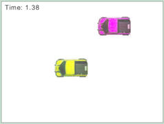

Problem 2.8: The Purple Truck is Catching Up to the Yellow Truck

Two trucks are driving with different speeds. Students are asked to determine
when and where the the purple truck passes the yellow truck, and to create a position versus time graph.